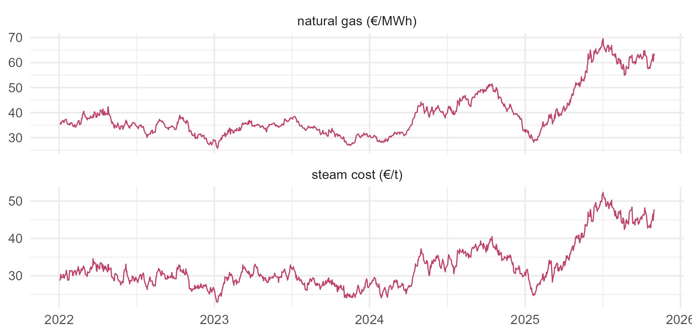

Module 6 · Lesson 12 of 13 Week 101 of 160 About 5–7 hours
Cointegration
Two wandering series on one leash
Natural gas prices wander like a random walk, and so does the plant’s steam cost, but they never wander apart, because steam is made from gas. Confirm that each series has a unit root, find their long-run relationship with the Engle-Granger method, test it with the Phillips-Ouliaris test, contrast it with a spurious pair, find the cointegrating rank with Johansen’s test, and fit an error-correction model that says how fast the steam cost catches up with the gas price.
Lesson 10 ended with a warning: regressing one wandering series on another gives “significant” results that mean nothing. But some wandering series really are tied together. The plant’s boilers burn natural gas, so its steam cost follows the gas price. Gas prices wander like a random walk: there’s no level they return to. The steam cost wanders too. But the two can’t drift apart for long, because if the steam cost ran far ahead of the gas price, the next contract renegotiation would bring it back.
Two non-stationary series that share a common stochastic trend, so that some combination of them is stationary, are cointegrated. Clive Granger and Robert Engle shared the 2003 Nobel Prize in economics partly for this idea. The data are 1,000 trading days of the gas price (€/MWh) and the plant’s daily steam cost (€ per tonne), from January 2022 to October 2025.
Picture walking a dog: you both wander all over the park, but the leash keeps you together. Cointegration is the leash!
In this lesson you’ll:
- confirm that two series are each integrated, I(1)
- estimate their long-run relationship by least squares, the Engle-Granger method
- test for cointegration, and contrast it with a spurious relationship
- find the number of cointegrating relationships with Johansen’s test
- fit an error-correction model, and find how fast deviations are corrected
Two wandering series
long <- rbind(data.frame(date = as.Date(gp$date), value = gp$gas_eur_mwh, series = "natural gas (€/MWh)"),
data.frame(date = as.Date(gp$date), value = gp$steam_cost_eur_t, series = "steam cost (€/t)"))
ggplot(long, aes(x = date, y = value)) +
geom_line(color = "#C2416C", linewidth = 0.4) +
facet_wrap(~ series, ncol = 1, scales = "free_y") +
labs(x = NULL, y = NULL) +
theme_minimal(base_size = 12)
Your turn. Check that each series has a unit root, and that its daily changes don’t, with the ADF test.
Test the steam cost’s changes too: diff(steam).
c(gas = tseries::adf.test(gas)$p.value, steam = tseries::adf.test(steam)$p.value,
gas_changes = tseries::adf.test(diff(gas))$p.value, steam_changes = tseries::adf.test(diff(steam))$p.value)p = 0.73 for the gas price and 0.65 for the steam cost: no evidence against a unit root in either. Their daily changes: p = 0.01 (or less) for both. So both are I(1). Cointegration only makes sense for series like these: two stationary series need no leash, and two series with different orders of integration can’t share one.
The Engle-Granger method
If the two series are cointegrated, there’s a combination \text{steam}_t - \beta_0 - \beta_1\,\text{gas}_t that’s stationary. The Engle-Granger method estimates it in two steps:
- Regress one series on the other by least squares: the cointegrating regression. Unlike Lesson 10’s spurious regression, this one is meaningful if the series are cointegrated, and its estimates are even unusually precise (“superconsistent”).
- Test the residuals for a unit root. If they’re stationary, the series are cointegrated.
Your turn. Step 1: regress the steam cost on the gas price.
Regress on the gas price, gas.
long_run <- lm(steam ~ gas)
c(coef(long_run), r2 = summary(long_run)$r.squared)In the long run, steam costs €8.13 per tonne plus €0.618 for every €/MWh of gas: about 0.62 MWh of gas per tonne of steam, priced in, which is a plausible boiler efficiency. R² = 0.97. That R² alone proves nothing, as Lesson 10’s spurious pair showed with 0.62. The test is whether the residuals, the steam cost’s deviation from its long-run relationship, are stationary.
Step 2 has a catch. The residuals come from a regression that chose \beta to make them as small as possible, so they look more stationary than they are, and the ordinary ADF critical values are too lenient. The Phillips-Ouliaris test, tseries::po.test(), uses the right critical values for residuals of a cointegrating regression. Its null hypothesis is no cointegration.
Your turn. Run it on the two series.
The second column is the gas price. The first column is the one regressed on the others.
tseries::po.test(cbind(steam, gas))$p.valuep = 0.01 (the smallest the test reports): strong evidence against “no cointegration”. The deviations from the long-run relationship are stationary: the steam cost wanders with the gas price, but always comes back to its line.
Your turn. For contrast, run the same test on two independent random walks.
Both walks have 1,000 steps.
set.seed(6121)
a <- cumsum(rnorm(1000))
b <- cumsum(rnorm(1000))
tseries::po.test(cbind(b, a))$p.valuep = 0.15 (the largest it reports): no evidence of cointegration. A regression of b on a would still give a large R² and a tiny p-value, but its residuals wander, and the cointegration test sees through it. That’s the practical rule: before trusting a regression between two I(1) series, test for cointegration. If they’re cointegrated, the levels regression is meaningful. If not, use their differences.
Johansen’s test
The Engle-Granger method has two weaknesses: the result can depend on which series you put on the left, and with more than two series, there can be more than one cointegrating relationship. Johansen’s method works within a VAR (Lesson 11) and tests the cointegrating rank r, the number of independent stationary combinations, one value at a time: is r = 0? If not, is r \leq 1? And so on. The urca package’s ca.jo() does it.
Your turn. Run the Johansen trace test, with 2 lags in the VAR and a constant in the cointegrating relationship, and compare the test statistics with the 5% critical values.
A constant in the cointegrating relationship: ecdet = "const".
jo <- urca::ca.jo(data.frame(steam = steam, gas = gas), type = "trace", K = 2, ecdet = "const")
cbind(statistic = jo@teststat, critical_5pct = jo@cval[, "5pct"])Read from the bottom up. r = 0: a statistic of 92.5, far above its 5% critical value of 20.0, so reject “no cointegration”. r \leq 1: 1.2, far below 9.2, so don’t reject. The rank is 1: one cointegrating relationship, one common stochastic trend, as expected for two series tied by one physical process.
Your turn. The cointegrating vector is the first column of jo@V. Normalize it so that the steam cost’s coefficient is 1, and compare it with the Engle-Granger estimates.
Divide by the steam cost’s entry, the first.
jo <- urca::ca.jo(data.frame(steam = steam, gas = gas), type = "trace", K = 2, ecdet = "const")
jo@V[, 1] / jo@V[1, 1](1, -0.617, -8.19): the stationary combination is \text{steam}_t - 0.617\,\text{gas}_t - 8.19. Engle-Granger’s least squares said 0.618 and 8.13. Two different methods, the same long-run relationship.
The error-correction model
Cointegration says the deviations are stationary. The error-correction model (ECM) says how they get corrected. It models the steam cost’s daily change with two terms: how far it was from its long-run relationship yesterday, and today’s change in the gas price:
\Delta\text{steam}_t = \alpha + \gamma\, e_{t-1} + \delta\,\Delta\text{gas}_t + \varepsilon_t,
where e_{t-1} is yesterday’s Engle-Granger residual. If the series are cointegrated, \gamma is negative: a positive deviation, steam too expensive for the gas price, is followed by a fall. Granger’s representation theorem says that cointegration and error correction are two sides of the same coin.
Your turn. Fit the ECM by least squares.
Drop the last residual: e[-length(e)], or e[-1000].
e <- resid(lm(steam ~ gas))
d_steam <- diff(steam)
d_gas <- diff(gas)
e_lag <- e[-1000] # yesterday's deviation: drop the last one
ecm <- lm(d_steam ~ e_lag + d_gas)
rbind(estimate = coef(ecm), se = summary(ecm)$coefficients[, "Std. Error"])\hat\gamma = -0.179 (SE 0.018): each day, 18% of any deviation from the long-run relationship is corrected. And \hat\delta = 0.633 (SE 0.021): a €1/MWh rise in the gas price raises the steam cost by €0.63 the same day. Unlike Lesson 10’s regressions, every term here is stationary, so the ordinary standard errors are valid.
Your turn. How long does it take for half of a deviation to disappear? With a correction of \gamma per day, the deviation shrinks by (1 + \gamma) a day, so its half-life is \log(0.5)/\log(1 + \gamma) days.
Use the correction coefficient, gamma.
gamma <- -0.179452014
log(0.5) / log(1 + gamma)3.5 trading days. A deviation, for example from a shift in the plant’s steam demand that briefly moves its cost, halves in three and a half days, and is mostly gone within two weeks. The cost accountants can treat the long-run relationship as the “fair” steam cost, and expect the actual cost to return to it quickly.
Challenge round
Challenge 1 · Short run and long run. Compare the ECM’s short-run effect of the gas price, \hat\delta, with the long-run one from the cointegrating regression. Are gas price changes passed through to the steam cost fully, and at once?
The short-run effect is the coefficient on the gas price’s changes, diff(gas).
long_run <- coef(lm(steam ~ gas))[["gas"]]
e <- resid(lm(steam ~ gas))
short_run <- coef(lm(diff(steam) ~ e[-1000] + diff(gas)))[[3]]
c(long_run = long_run, short_run = short_run, ratio = short_run / long_run)0.618 in the long run and 0.633 the same day: the ratio is 1.02, so price changes pass through fully and at once, with a little overshoot that the error correction then removes. In many markets, the short-run pass-through is much smaller than the long-run one, and the ECM shows how the gap closes over time.
Challenge 2 · Where’s the deviation going? On the last day, the steam cost was above its long-run relationship. Find the deviation, and its expected size ten trading days later, if the gas price doesn’t change.
Ten days: raise (1 + \gamma) to the power 10.
e <- resid(lm(steam ~ gas))
gamma <- coef(lm(diff(steam) ~ e[-1000] + diff(gas)))[[2]]
c(today = e[[1000]], in_10_days = e[[1000]] * (1 + gamma)^10)€0.29 per tonne above the long-run relationship today, and an expected €0.04 in ten trading days. This is the forecast a cointegrated system makes that a VAR in differences can’t: it knows the levels are tied, so it predicts the gap closing. For long-horizon forecasts of cointegrated series, that matters a lot.
Quick quiz
1. When are two series cointegrated?
They share a common stochastic trend, so they can’t drift apart.
2. Why can’t you use the ordinary ADF critical values on the residuals of a cointegrating regression?
Engle-Granger and Phillips-Ouliaris tests use adjusted critical values.
3. A Johansen trace test rejects r = 0 but not r \leq 1. What’s the cointegrating rank?
Test from r = 0 upward, and stop at the first hypothesis you can’t reject.
4. In an error-correction model, the coefficient on the lagged deviation is −0.18. What does that mean?
A negative coefficient pulls the series back toward equilibrium. Its half-life here is 3.5 days.
5. Two I(1) series are not cointegrated. How should you model their relationship?
Without cointegration, a levels regression is spurious, and there’s no error to correct.
6. What can an error-correction model forecast that a VAR in differences can’t?
A VAR in differences forgets the levels, and with them the long-run relationship.
Wrap-up
You can now find and use long-run relationships between wandering series. Here’s what you’ve learned:
- Both series are I(1): ADF p = 0.73 for the gas price and 0.65 for the steam cost, and their changes are stationary.
- Engle-Granger: in the long run, steam costs €8.13 per tonne plus €0.618 per €/MWh of gas, and the Phillips-Ouliaris test confirms cointegration (p = 0.01), while two independent random walks fail it (p = 0.15).
- Johansen: the cointegrating rank is 1 (trace statistics 92.5 and 1.2), and the cointegrating vector, (1, -0.617, -8.19), matches Engle-Granger.
- Error correction: 18% of a deviation is corrected each day, a half-life of 3.5 trading days, and gas price changes pass through fully and at once (0.63 against 0.62).
TipPractice in RStudio (optional, about an hour)
Download gas_prices.csv into your project’s data-raw/ folder, and install urca: install.packages("urca").
- Plot the deviation. Plot the Engle-Granger residuals over time, with a horizontal line at 0. Do they look stationary? Compare with the residuals of a regression of
bonafor two independent random walks. - The other direction. Regress the gas price on the steam cost instead. Is the implied long-run slope 1/0.618? Why not exactly? (Hint: least squares isn’t symmetric.)
- A vector error-correction model. Run
summary(urca::cajorls(jo, r = 1)). It fits the ECM for both series. Which one does the correcting: does the gas price respond to deviations, or only the steam cost? - The Engle-Granger critical values. Use
urca::ur.df(e, type = "none", lags = 1)on the residuals, and compare its test statistic with the Engle-Granger 5% critical value for two series, about −3.37.
NoteKey words from this lesson
- Cointegration
- Two or more I(1) series with a linear combination that’s stationary.
- Common stochastic trend
- The shared random-walk component that cointegrated series follow.
- Cointegrating regression
- A levels regression between cointegrated series, which estimates their long-run relationship.
- Engle-Granger method
- Estimating the cointegrating regression by least squares, then testing its residuals for a unit root.
- Phillips-Ouliaris test
- A test of the null hypothesis of no cointegration, with critical values for regression residuals.
- Johansen’s method
- A VAR-based test of the cointegrating rank, and an estimate of the cointegrating vectors.
- Error-correction model
- A model for the changes of cointegrated series, including the previous deviation from their long-run relationship.
- Half-life
- The time it takes for half of a deviation to be corrected.
NoteWant to read more?
- Robert Engle and Clive Granger, “Co-integration and error correction: representation, estimation, and testing”, Econometrica (1987). The paper that introduced the idea, and the representation theorem.
- Bernhard Pfaff, Analysis of Integrated and Cointegrated Time Series with R (2nd edition, Springer, 2008). By the author of the urca and vars packages.
- The Royal Swedish Academy of Sciences, “Time-series econometrics: cointegration and autoregressive conditional heteroskedasticity” (2003). The scientific background to Engle and Granger’s Nobel Prize, which also covers Lesson 13’s ARCH models.